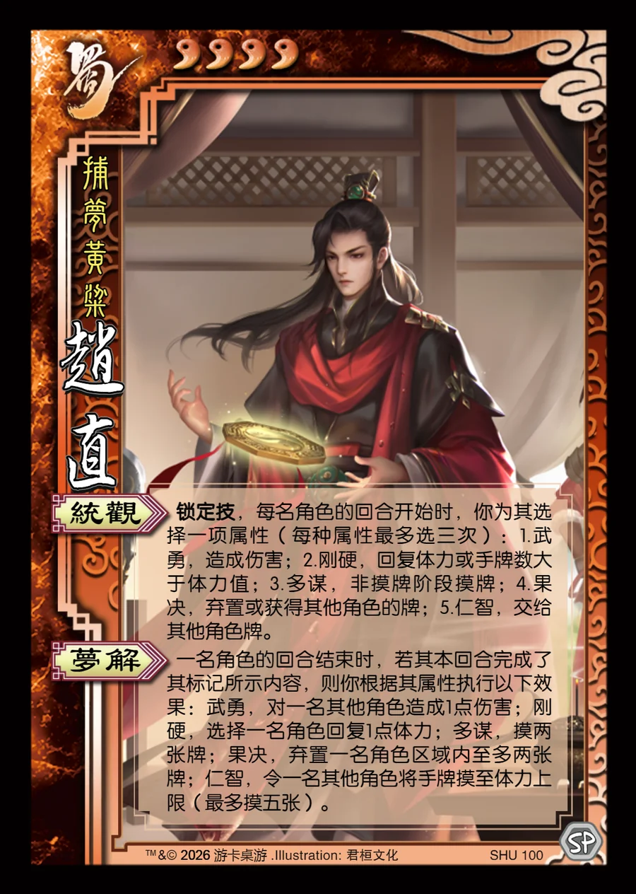

点击卡面查看大图
蜀
赵直
♥4捕梦黄粱
统观锁定技
锁定技，每名角色的回合开始时，你为其选择一项属性（每种属性最多选三次）：1.武勇，造成伤害；2.刚硬，回复体力或手牌数大于体力值；3.多谋，非摸牌阶段摸牌；4.果决，弃置或获得其他角色的牌；5.仁智，交给其他角色牌。
梦解
一名角色的回合结束时，若其本回合完成了其标记所示内容，则你根据其属性执行以下效果：武勇，对一名其他角色造成1点伤害；刚硬，选择一名角色回复1点体力；多谋，摸两张牌；果决，弃置一名角色区域内至多两张牌；仁智，令一名其他角色将手牌摸至体力上限（最多摸五张）。